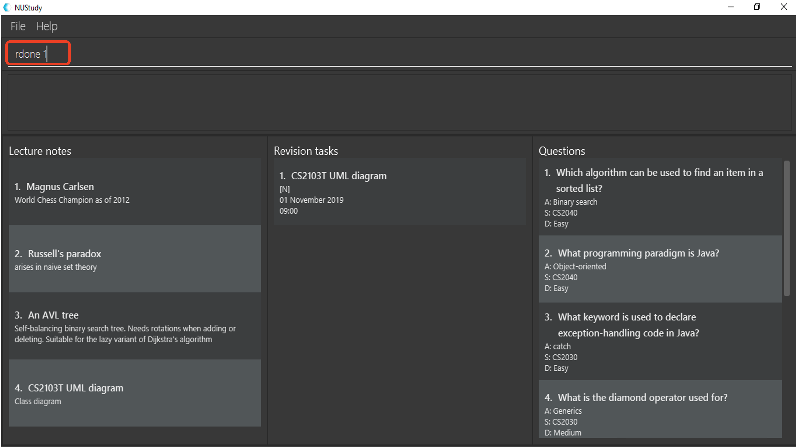

Introduction
This portfolio is to document my contributions to project NUStudy, which is a software engineering project under Module CS2103T at National University of Singapore. Our team consists of five students majoring in Computer Science. We decided to morph an existing Java application Address Book 3 into NUStudy, which is a desktop application with command line for user input and a JavaFX GUI for display. NUStudy supports notes management, quiz practice, revision task records, and usage statistics to help with revision.
You may take note of the following symbols and formatting used in this portfolio unless otherwise specified:overdue - The monospaced text indicates that it is a user input.Task - An italicised word indicates that it is a class name. #11 - A number with # sign indicates the Pull Request or Issue number. PR - Abbreviation for "Pull Request". monospaced text in Developer Guide has different meanings. If the first letter
of each word is capitalized, then the monospaced text refers to a class or interface name. If
the text comes with a bracket () at the end, then the text refers to a method name. Otherwise, the text refers to user command.
|
Summary of Contributions
This section summarises my contributions to the project, including feature enhancements, documentation and project management.
Enhancement added: I implemented revision task management features (starting from PR #37).
-
What it does: These features support tasks for revising a note or a question at a particular point of time. Users can perform operations with revision tasks such as addition, deletion, searching, editing, marking done, listing finished/unfinished/overdue tasks etc.
-
Justification: This feature allows users to set their revision plans and goals. It makes the revision more structured and organised. The task is designed in a way that each task only supports revision of one note or question. Having this "one tiny easy revision task at a time" approach, users would find it easier to start the revision. This helps to stop procrastination to some extent.
-
Highlights: This enhancement is dependent on Note and Question classes implemented by my teammates. There might be regressions of my task features if my teammates decide to change their implementations. Therefore, I did a thorough analysis of the design pattern and the project architecture to use as least information as possible from their classes in order to reduce coupling. The task management features require a decent amount of effort because they need to support a wide range of operations.
Code contributed: You may feel free to check my code here.
Other contributions:
-
Project management:
-
Documentation:
-
Team work and community contribution:
Contributions to the User Guide
This section summarises my contributions to the User Guide.
Revision tasks
You will know more about how to work with revision tasks in this section. The revision tasks help you plan your revision of notes and questions. You can do various operations on tasks, including addition, deletion, searching etc.
The revision tasks are not synchronised with the note or the question. Once created, the task content will not
change if you modify the corresponding note or question.
Revision tasks with the same heading, date and time are considered duplicate tasks and cannot co-exist.
Adding a revision task for a note: rn
You can add a revision task for a note to the current revision task list with this command.
The heading will copy the title.
The GUI will display all tasks upon completing the command.
Format: rn t/TITLE_OF_NOTE dt/DATE tm/TIME
TITLE_OF_NOTE is case sensitive.
|
Example:
-
Type
rn t/CS2103T UML diagram dt/01/11/2019 tm/0900in the command input box, and pressEnterto execute it, as shown in the diagram below.
-
The result box will display the message "Revision task added: [N] NOTE : CS2103T UML diagram by: 01 November 2019 09:00". The task is added to the task list shown in the middle panel, as shown in the diagram below.

Adding a revision task for a question: rq
You can add a revision task for a question to the current revision task list with this command.
The heading will copy the question body.
The GUI will display all tasks upon completing the command.
Format: rq i/INDEX_OF_QUESTION dt/DATE tm/TIME
Example:
rq i/1 dt/11/11/2019 tm/1500
For constraints on DATE and TIME input, you may refer to Adding a revision task for a note: rn.
|
Removing revision task: rdelete
You can remove a particular revision task from current list with this command.
The GUI will display the current list (all-task, done-task, not-done-task or overdue-task) view.
Format: rdelete INDEX_OF_TASK
Example: rdelete 2
Marking the revision task as done: rdone
You can mark a task as done once you finished it.
The GUI will display the current list (all-task, done-task, not-done-task or overdue-task) view.
Format: rdone INDEX
Example:
-
Type
rdone 1in the command input box, and pressEnterto execute it, as shown by the diagram below. -
The result box will display the message "Revision task marked as done: [Y] …" with the task details. The status icon of the task turns from "[N]" (not done) to "[Y]" (done). You may refer to the diagram below.

You cannot use "undone" (marking a task as not done) feature. People usually "undone" a task because they realise that some parts of the task are not fully completed. In this case, you should create a new task with a new date or time (same as "re-scheduling" in the real world).
Editing a revision task: redit
You can edit a revision task with this command. You need to provide non-empty arguments with prefix h/, dt/ and tm/
for fields you want to change. Please take note that at least one field must be provided.
Format: redit INDEX [h/HEADING] [dt/DATE] [tm/TIME]
Example:
redit 1 h/CS2100 Logic Circuit dt/15/08/2019 tm/1200
HEADING can be the title of a note or the question body of a question.
The edited HEADING must be an existing title or question body.HEADING is case sensitive.
|
Viewing all revision tasks: rlist
You may view the whole revision task list using this command.
Format: rlist
Viewing completed revision tasks: finished
You may use this command to view the list of revision tasks that you have completed.
Format: finished
Viewing uncompleted revision task: unfinished
You may use this command to the list of revision tasks that you have not completed.
Format: unfinished
Viewing overdue revision tasks: overdue
You may use this command to view the revision tasks which you have not done but having passed the scheduled time.
Format: overdue
Finding tasks with specified details: rfind
You may use this command to search for tasks with specified details. You may key in keyword(s) of the heading, or the date, or the time,
with prefix h/ dt/ tm/ respectively.
The GUI will display a task list of all tasks with the field (heading or date or time) that matches your input.
Format:
rfind h/WORD [WORD]… or rfind dt/DATE or rfind tm/TIME
Words for headings are case insensitive for rfind.
|
Example:
rfind h/hello world - This command gives you all tasks with headings containing "hello" or "world" or "hello world".
rfind dt/01/11/2019 - This command gives you all tasks on 1 November 2019.
rfind tm/1200 - This command gives you all tasks at 12:00 (12pm), regardless of date.
The priority of the fields are h/ > dt/ > tm/. When multiple prefixes (fields) are provided for search, only
the field with the highest priority will be considered. The rest will be ignored.
|
|
A heading is considered matching with the keywords as long as one of the words in the heading is the same as one of the words in the input keywords.
Please note that the minimum matching unit is a word (not characters) in the heading. Words in the headings are separated by a space. |
Clearing current revision plan: rclear
You can remove all revision tasks with this command.
Format: rclear
Apart from the documentation of my individual feature, I also helped the team by adding a command summary of everyone’s feature. You may refer to the Command Summary section in the User Guide.
Contributions to the Developer Guide
This section summarises my contributions to the Developer Guide. For a full list of all task commands, please refer to the beginning of section "Revision task management - Implementation" in the Developer Guide.
Revision task management
Revision task management involves addition, deletion, editing, searching and many other operations on tasks. This section explains how task management features are implemented.
Implementation
Revision task management is facilitated by Model.
Commands related to task manipulation extend Command class.
The commands update the Model interface which is implemented by ModelManager class.
The ModelManager then updates AppData which stores all the revision tasks in an internal data structure TaskList.
TaskList is essentially an ObservableList of Task.
Local data will be updated in the end by LogicManager.
Taking AddTaskForNoteCommand as an example, the following process illustrates the mechanism of adding a revision task for note to the task list (adding a revision task
for question has a similar command but different parameters).
Step 1. The user enters command rn t/UML diagram dt/01/01/2019 tm/1200 for adding a task for note. The command is parsed by AddTaskForNoteCommandParser.
AddTaskForNoteParser then creates an AddTaskForNoteCommand. The high-level logic of parsing and creating the command
is similar to the process of deleting a note from the note list as illustrated by the sequence diagram for deleting a note.
However, the execution stage of AddTaskForNoteCommand differs from that of deleting a note.
Step 2. The Logic Manager calls Command#execute(Model) which essentially calls AddTaskForNoteCommand#execute(Model)
because of polymorphism.
Step 3. AddTaskForNoteCommand calls its own private method hasValidNote(Model) which checks if
the Note with Title "UML diagram" exists in Model. If not, a CommandException will be thrown and execute(Model) stops because non-existing note
title is not allowed to be the heading of any tasks.
Step 4. AddTaskForNoteCommand calls Model#hasTask(Task) to check whether the Model has a task identical to the one
the user is adding. If there is an existing identical task, a CommandException will be thrown and execute(Model) stops to avoid duplicate tasks.
Step 5. AddTaskForNoteCommand calls Model#addTask(Task) to add the new task to the Model. Model calls
AppData#addTask(Task) to add the task to AppData which keeps track of all data of the app. AppData then calls TaskList#add(Task)
to add the task to TaskList, which is the underlying data structure storing tasks.
Step 6. A CommandResult is created and returned to the LogicManager to inform the user of successful addition of a new
task to the revision plan.
The following sequence diagram illustrates the interaction between classes when calling AddTaskForNoteCommand#execute(Model).
execute(Model) of AddTaskForNoteCommandZooming in to Step 3, when calling hasValidNoteForTask(Model), AddTaskForNoteCommand creates a new Note with a Title "UML diagram" and a Content "dummy entry".
The entry of Content is not important because AddTaskForNoteCommand only records the Title of a Note and the existence
of a Note is checked against its Title only (if the title is in the note list, then the note exists in the list).
The detailed process is illustrated by the sequence diagram below.
Note in the model when AddTaskForNoteCommand calls its own hasValidNoteForTask(Model)The following activity diagram summarizes the whole process of adding a task for note.

Design considerations
Aspect: Design of Task
-
Alternative 1 (current implementation): We implement
Taskas a concrete class with two subclasses to support task for notes and questions respectively.-
Pros: It supports different behaviours of task for
Noteand task forQuestionby polymorphism. The concreteTaskclass will also allow adding of general tasks in v2.0. -
Cons: We need to implement two different
AddTaskcommands to support addition of the two different types of tasks. Hence we need to write more pieces of code.
-
The class diagram below illustrates how Task class is designed:
Task class-
Alternative 2: We design
Taskas an interface to be implemented by two different classes.-
Pros: This approach is better in data hiding. The client classes know less information about internal properties of
Task. -
Cons: We need to implement all methods in the interface and hence more code snippets are needed. Both implementing classes have to include the field in common such as
isDone, which results in duplicate code snippets.
-
-
Alternative 3: We wrap everything in one concrete
Taskclass to support both lecture notes and questions.-
Pros: We need to write less code.
-
Cons: It violates the principle of Separation of Concern, making it hard to maintain or extend in the future if more types of tasks are needed.
-
Aspect: Design of command for adding a task
-
Alternative 1 (current implementation): We implement the command as two independent classes, namely
AddTaskForNoteCommandandAddTaskForQuestionCommandto support addingTaskForNoteandTaskForQuestionrespectively.-
Pros: The two types of commands, although similar in logic, receive different parameters and interact with different classes (one interacting with
TaskForNotewhile another one interacting withTaskForQuestion). Therefore, it is better to separate the concerns by implementing the commands as two separate classes. IfTaskForNoteandTaskForQuestionclasses deviate more significantly in the future in terms of their behaviour, this approach makes it easier to maintain the adding commands. -
Cons: We need to write more code. There might be some duplicate code snippets involving the logic shared by both commands. We also need to implement different parsers for the two commands, which involes some extra work.
-
-
Alternative 2: We implement only one class of adding command to support both
TaskForNoteandTaskForQuestion.-
Pros: We can write less code as there would be fewer duplicate code snippets and we do not need to implement separate command parsers.
-
Cons: This approach leads to lower level of abstraction as all concerns of
Task, regardless ofTaskForNoteorTaskForQuestion, are wrapped into the same class. It could be difficult to maintain if the behaviors ofTaskForNoteandTaskForQuestionget more complex and diverse.
-
Use case: Add a revision task for note to revision plan (Shui Yao)
Preconditions: lecture note list is not empty
MSS
-
Student keys in revision task command and specifies the title of the note he/she wants to add to revision plan, with starting date and starting time
-
NUStudy adds the task to revision plan
-
NUStudy informs the Student about successful addition of the task
Use case ends
Extensions
-
1a. NUStudy detects missing entry for note title
-
1a1. NUStudy requests for input of note title
-
1a2. Student enters correct input
-
Steps 1a1 - 1a2 are repeated until the input is valid
-
-
Use case resumes from Step 2
-
1b. NUStudy detects a note title entry that is non-existent in the note list
-
1b1. NUStudy requests for a valid input of note title (a note that exists in the note list)
-
1b2. Student enters valid note title
-
Steps 1b1 - 1b2 are repeated until the input is valid
-
-
Use case resumes from Step 2
-
1c. NUStudy detects missing starting date or time
-
1c1. NUStudy requests for correct input with starting date and time
-
1c2. Student enters correct input following the format
-
Steps 1c1 - 1c2 are repeated until getting a correct input with valid starting date and time
-
-
Use case resumes from Step 2
-
1d. NUStudy detects invalid date or time
-
1d1. NUStudy requests for valid date and time
-
1d2. Student enters correct input with valid date and time
-
Steps 1d1 - 1d2 are repeated until getting a correct input with valid date and time
-
-
Use case resumes from Step 2
Apart from addition to my individual features, I also modified the diagrams of the UI and Model components. You may refer to Figure 4. Class diagram of the UI component, Figure 5. Detailed class diagram for Panels package and Figure 8. Class diagram of the Model component in the Developer Guide.